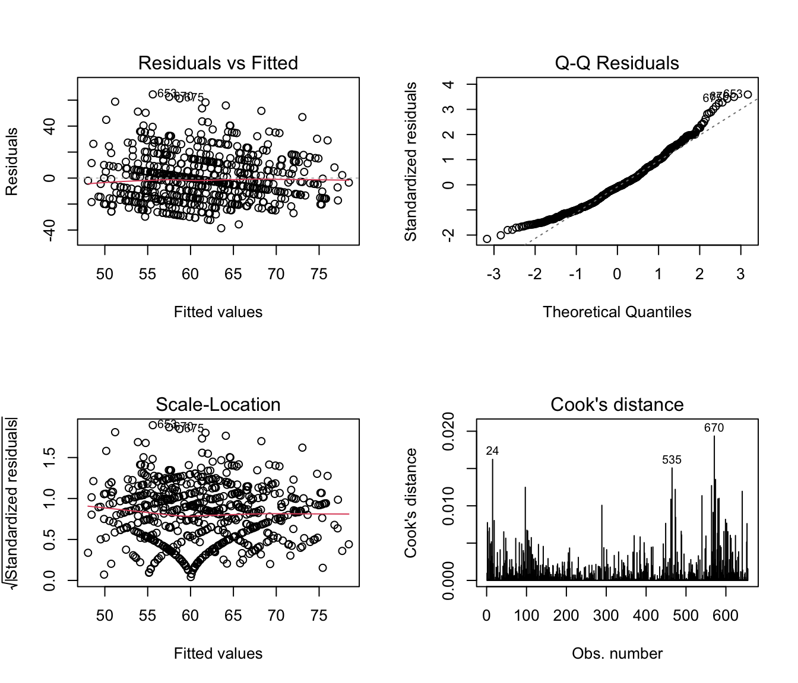
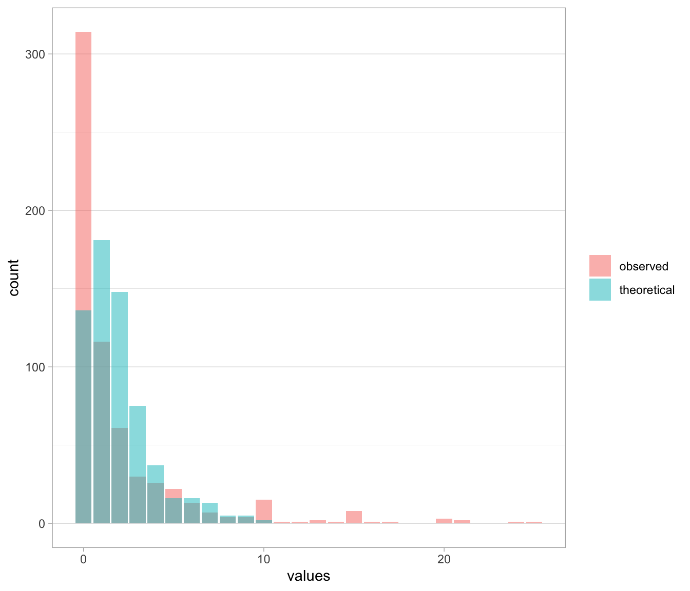
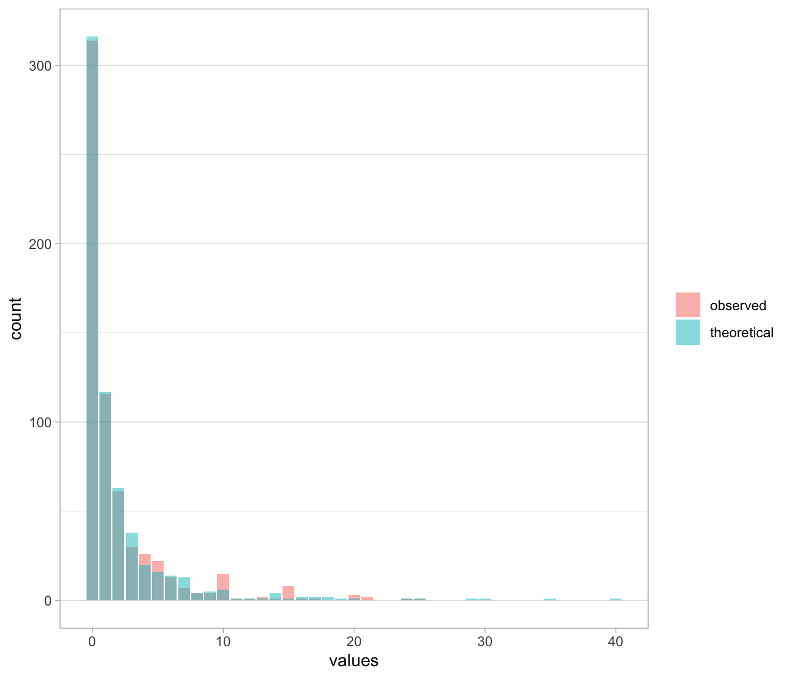

Modèle linéaire = modèle de régression linéaire = régression linéaire.
Utilisé quand une variable quantitative (continue) normalement distribuée \(Y\) doit être mise en relation avec une ou plusieurs variables \(X_1, X_2, ..., X_p\) (quantitatives ou qualitatives, binaires ou catégorielles (dans le cas de variables catégorielles, elles sont automatiquement transformées en variables binaires)).
\(\alpha_1, \alpha_2, ..., \alpha_p\) = coefficients de régression (pentes)
\(\epsilon\) = terme d’erreur (résidus), supposé suivre une loi normale centrée réduite (d’espérance nulle = 0, avec espérance = moyenne)
Objectif de l’algorithme = estimer les coefficients de régression (\(\alpha_0, \alpha_1, \alpha_2, ..., \alpha_p\)) de façon à minimiser la variance estimée de \(\epsilon\) (méthode des moindres carrés).
En gros : l’objectif est de trouver le modèle pour lequel le bruit est minimal.
Conditions de validité
Normalité de la variable résiduelle \(\epsilon\)
Homoscédasticité des résidus (variance constante de \(\epsilon\) pour toutes les valeurs de \(X\))
Indépendance des résidus \(\varepsilon\) (les résidus doivent être indépendants les uns des autres, c’est à dire pas de structure d’autocorrélation en particulier pas de structure temporelle)
Note
Relation régression linéaire et ANOVA
L’ANOVA (analyse de la variance) est en fait un cas particulier de la régression linéaire où toutes les variables explicatives sont catégorielles. Ainsi, une ANOVA à un facteur est équivalente à une régression linéaire avec une variable explicative binaire.
1.2 Exemple avec le jeu de données smp
Objectif : modéliser la durée de l’entretien en fonction de différentes variables explicatives.
La variable à expliquer est : durée de l’entretien (quantitative, donc régression linéaire adaptée)
âge (quantitative)
trouble psychiatrique
trouble de la personnalité
traumatisme pendant l’enfance
type de prison
Description des variables :
Étude descriptive des variables
Vérification des conditions de validité du modèle : notament la normalité de la variable à expliquer
Call:
lm(formula = duree.interv ~ schizophrenie + depression + abus.subst +
gravite + charactere + trauma.enfant + age + factor(type.centre),
data = smp2)
Residuals:
Min 1Q Median 3Q Max
-38.578 -13.855 -1.769 10.922 64.405
Coefficients:
Estimate Std. Error t value Pr(>|t|)
(Intercept) 42.48996 3.99998 10.623 < 2e-16 ***
schizophrenie 3.06420 2.80997 1.090 0.275911
depression 6.71269 1.64793 4.073 5.21e-05 ***
abus.subst 4.60037 1.79854 2.558 0.010760 *
gravite 1.06236 0.56548 1.879 0.060737 .
charactere 1.62547 0.93536 1.738 0.082723 .
trauma.enfant -0.66805 1.66931 -0.400 0.689144
age 0.20788 0.06066 3.427 0.000649 ***
factor(type.centre)2 4.09540 2.53401 1.616 0.106546
factor(type.centre)3 -1.29681 2.44159 -0.531 0.595509
---
Signif. codes: 0 '***' 0.001 '**' 0.01 '*' 0.05 '.' 0.1 ' ' 1
Residual standard error: 18.02 on 645 degrees of freedom
(144 observations deleted due to missingness)
Multiple R-squared: 0.1086, Adjusted R-squared: 0.09619
F-statistic: 8.734 on 9 and 645 DF, p-value: 1.919e-12
Schizophrénie : augmentation de la durrée moyenne de 3 minutes, non significatif (p=0,28)
Dépression : augmentation de la durée moyenne de 6 minutes, significatif
Gravité : augmentation de la durée moyenne de 1 minute par point de gravité, significatif
Type de centre : deux lignes, car recodée en deux variables binaires (centre 2 vs centre 3, centre 3 vs centre 1)
Mais la présentation ne permet pas de tester l’effet global de la variable « type de centre » , c’est-à-dire répondre à la question : la durée d’entretien est-elle indépendante du type de centre, à valeur égale des autres variables ?
Dans ce cas : fonction drop1() :
La fonction drop1() permet de tester l’effet global d’une variable explicative en comparant le modèle complet avec un modèle sans cette variable.
Ici : drop1(mod, test="F") permet de tester l’effet global de chaque variable explicative en comparant le modèle complet avec un modèle sans cette variable, en utilisant un test F (test F = test de comparaison de modèles (ANOVA)).
Le type de centre a donc un effet global significatif (p=0,005) sur la durée de l’entretien.
Vérification des conditions de validité du modèle
par(mfrow=c(2,2))plot(mod, which=1:4)

Residuals vs Fitted : permet de vérifier que la variance des résidus est constante et globalement indépendante des valeurs prédites (homoscédasticité).
Normal Q-Q : permet de vérifier la normalité des résidus (les points doivent être proches de la diagonale).
Cook’s distance : permet d’identifier les points influents (points avec une grande distance de Cook, au-dessus de la ligne pointillée).
1.3 Corrélation et modèle linéaire
Rappel sur le coefficient de corrélation de Pearson (r) :
\(r = 0\) : absence de corrélation linéaire entre \(X\) et \(Y\)
Donc quand 2 variables \(X\) et \(Y\) sont parfaitement corrélées (\(r\) = 1 ou -1), elles sont linéairement déterminées (\(Y = a0 + a1 X\)).
Proximité entre corrélation et régression linéaire :
Si \(X\) et et \(Y\) sont deux variables aléatoires, la régression linéaire de \(Y\) en fonction de \(X\) permet de prédire les valeurs de \(Y\) à partir des valeurs de \(X\).
Si \(X\) et \(Y\) sont linéairement liés, le modèle de régression linéaire permet de quantifier cette relation linéaire.
La corrélation sert uniquement à dire s’il existe un lien entre deux variables et si ce lien va dans le même sens ou en sens inverse.
La régression sert à utiliser une variable pour estimer la valeur attendue d’une autre variable.
La dispersion d’une variable correspond au fait que ses valeurs sont plus ou moins éloignées les unes des autres.
Dire qu’une partie de la dispersion est expliquée signifie qu’une partie des différences observées dans Y est liée aux valeurs de X.
Le carré de la corrélation correspond à la fraction de la dispersion de Y qui est expliquée par X à travers la relation linéaire.
Une fraction signifie simplement une partie du tout, par exemple 40 % de ce qui varie dans Y.
Si cette fraction est faible, alors connaître X aide très peu à estimer Y.
Si cette fraction est élevée, alors connaître X aide beaucoup à estimer Y.
Même si une grande partie de la dispersion est expliquée, cela ne prouve jamais que X est la cause de Y.
Corrélation et régression décrivent donc le même lien linéaire, mais la corrélation mesure la force du lien et la régression sert à faire des estimations chiffrées de Y. Si un exemple numérique concret doit accompagner ces phrases pour ancrer chaque notion, cela peut être ajouté.
## 1. Simulation des donnéesset.seed(123) # pour rendre l'exemple reproductiblen <-100# nombre d'observationsX <-rnorm(n, mean =0, sd =1) # génération X bruit <-rnorm(n, mean =0, sd =1) # génération du bruitY <-2* X + bruit # création de Y en fonction de X avec du bruit
Corrélation entre X et Y :
r <-cor(X, Y)r
[1] 0.8786993
r = 0.8786 : forte corrélation positive entre X et Y.
Régression linéaire de Y sur X
Faire une régression linéaire de Y en fonction de X permet de construire une règle numérique qui permet de prédire Y à partir de X, à partir de données réelles (bruitées)
mod <-lm(Y ~ X)summary(mod)
Call:
lm(formula = Y ~ X)
Residuals:
Min 1Q Median 3Q Max
-1.9073 -0.6835 -0.0875 0.5806 3.2904
Coefficients:
Estimate Std. Error t value Pr(>|t|)
(Intercept) -0.10280 0.09755 -1.054 0.295
X 1.94753 0.10688 18.222 <2e-16 ***
---
Signif. codes: 0 '***' 0.001 '**' 0.01 '*' 0.05 '.' 0.1 ' ' 1
Residual standard error: 0.9707 on 98 degrees of freedom
Multiple R-squared: 0.7721, Adjusted R-squared: 0.7698
F-statistic: 332 on 1 and 98 DF, p-value: < 2.2e-16
Affiche les coefficients, l’ordonnée à l’origine (intercept), la pente, le R², etc.
\(r^2\) correspond à la proportion de la variance de Y expliquée par X dans le modèle linéaire, c’est à dire la fraction de la variance de Y qui est expliquée par X à travers la relation linéaire.
Valeurs ajustées (prédictions pour les X observés)
Y_chapeau <-fitted(mod)
L’instruction fitted(mod) permet d’obtenir les valeurs prédites de Y (notées \(Y_{chapeau}\)) pour chaque valeur observée de X, en utilisant le modèle de régression linéaire.
Vérification r^2 = Var(Y_chapeau) / Var(Y)
On vérifie ici que le \(r^2\) obtenu dans le résumé du modèle est bien égal à la variance des valeurs prédites (\(Y_{chapeau}\)) divisée par la variance de Y.
Si les deux valeurs sont égales, cela confirme que le \(r^2\) du modèle linéaire correspond bien à la fraction de la variance de Y expliquée par X.
Cela revient à dire :
La corrélation dit à quel point X et Y vont ensemble.
La régression dit combien des différences de Y on peut retrouver grâce à X (quelle est la part de la variance de Y expliquée par X = quelle part des variations de Y est liée aux variations de X).
Le pourcentage de la variance de Y expliquée par X est donné par le carré du coefficient de corrélation (r²).
Dans le cas d’une régression avec une seule variable X, ces deux informations sont numériquement équivalentes une fois mises au carré.
Avec une seule variable explicative X :
\(r^2\) = carré du coefficient de corrélation
= part de la variabilité de Y prédite par la régression
= % de la variance de Y expliquée par X.
Important
Résumé : relation entre corrélation et régression linéaire
La corrélation mesure à quel point deux variables X et Y varient ensemble de façon linéaire.
La régression utilise cette relation linéaire pour prédire les valeurs de Y à partir des valeurs de X, dans le cas où il y a une seule variable explicative X.
1.4 Le test t : un cas particulier du modèle linéaire
Rappel : le test t permet de comparer la moyenne d’une variable quantitative entre deux groupes.
Dans le cadre d’un modèle linéaire, on peut considérer que le test t est un cas particulier où :
la variable à expliquer \(Y\) est quantitative
la variable explicative \(X\) est binaire (deux groupes)
le modèle linéaire devient un modèle de régression linéaire avec une seule variable binaire explicative (un facteur à deux modalités).
\[
Y = \alpha_0 + \alpha_1 \text{groupe}_i + \epsilon_i
\]
où \(\text{groupe}_i\) est une variable binaire (0 ou 1) indiquant le groupe auquel appartient l’observation \(i\).
Dans ce cas, le modèle linéaire permet de tester si la moyenne de \(Y\) est significativement différente entre les deux groupes.
1.4.1 Exemple R
1.4.1.1 Test t
On avait vu un test t qui comprarait la moyenne d’âge des détenus selon qu’ils étaient ou non déprimés.
t.test(smp$age ~ smp$depression, var.equal=TRUE)
Two Sample t-test
data: smp$age by smp$depression
t = 2.6337, df = 795, p-value = 0.008611
alternative hypothesis: true difference in means between group 0 and group 1 is not equal to 0
95 percent confidence interval:
0.6425038 4.4032412
sample estimates:
mean in group 0 mean in group 1
39.93182 37.40895
t = 2.634 : la moyenne d’âge des détenus déprimés est significativement plus basse que celle des détenus non déprimés.
p-value = 0.008611 : la différence de moyenne est significative (p < 0,05).
1.4.1.2 Régression linéaire
On peut aussi faire une régression linéaire avec la variable binaire depression comme variable explicative :
summary(lm(age ~ depression, data=smp))
Call:
lm(formula = age ~ depression, data = smp)
Residuals:
Min 1Q Median 3Q Max
-20.932 -10.932 -1.409 8.068 46.591
Coefficients:
Estimate Std. Error t value Pr(>|t|)
(Intercept) 39.9318 0.6003 66.519 < 2e-16 ***
depression -2.5229 0.9579 -2.634 0.00861 **
---
Signif. codes: 0 '***' 0.001 '**' 0.01 '*' 0.05 '.' 0.1 ' ' 1
Residual standard error: 13.21 on 795 degrees of freedom
(2 observations deleted due to missingness)
Multiple R-squared: 0.008649, Adjusted R-squared: 0.007402
F-statistic: 6.936 on 1 and 795 DF, p-value: 0.008611
t value = - 2,634 et p value = 0,008611 : les résultats sont identiques à ceux du test t.
1.4.2 Relation entre test t et régression linéaire
Le test t est donc un cas particulier de la régression linéaire où la variable explicative est binaire (un facteur à deux modalités).
Dans ce cas, le modèle linéaire permet de tester si la moyenne de la variable à expliquer est significativement différente entre les deux groupes.
Considérer le modèle llinéaire comme une généralisation du test t permet de transposer une partie des propriétés du test t à la régression linéaire :
Normalité des résidus : hypothèse faible, pouvant être facilement compensée par un échantillon suffisamment grand
Indépendance des observations : reste nécessaire
Homoscédasticité : = égalité de la variance : peut être supprimée par un estimateur robuste
Estimateur “sandwich” : fonctionne en utilisant la matrice de variance-covariance des résidus pour ajuster les erreurs standards des coefficients du modèle.
Bootstrap : méthode de rééchantillonnage qui permet d’estimer la variance des coefficients du modèle en générant de multiples échantillons à partir des données originales.
Défaut de linéarité d’une variable quantitative : peut poser problème, mais peut être compensé par une transformation de la variable (logarithmique, racine carrée, etc.) ou par l’utilisation de modèles non linéaires.
Note
Méthode des moindres carrés
La régression linéaire utilise la méthode des moindres carrés pour estimer les coefficients du modèle, de manière à minimiser la somme des carrés des résidus (différences entre les valeurs observées et les valeurs prédites).
L’objectif est de trouver les coefficients \(\alpha_0\) et \(\alpha_1\) qui minimisent la somme des carrés des erreurs (résidus) entre les valeurs observées de \(Y\) et les valeurs prédites par le modèle.
2 Introduction aux GLM
2.1 Comment ça marche les GLM ?
Les modèles linéaires généralisés reposent sur 3 éléments:
Un prédicteur linéaire
Une fonction de lien
Une structure des erreurs
2.2 Le prédicteur linéaire
« prédicteur linéaire« , c’est un terme un peu complexe pour dire, que comme dans les modèles linéaires classiques, les réponses prédites par les modèles vont l’être à partir d’une combinaison linéaire des variables prédictives
Le prédicteur linéaire est : \(\eta_i\)
\[
\eta_i = \sum_{j=1}^{p} \beta_j X_{ij}
\]
où :
\(\eta_i\) : prédicteur linéaire pour l’individu \(i\).
C’est la combinaison linéaire de toutes les variables explicatives.
Dans un GLM, c’est la quantité que la fonction de lien va transformer pour produire la moyenne du modèle (ex : logit, log, identité…).
\(X_{ij}\) : valeur de la variable explicative\(j\) pour l’individu \(i\).
Chaque individu a un ensemble de covariables (âge, sexe, exposition, etc.), notées \(X_{i1}, X_{i2}, \dots, X_{ip}\).
\(\beta_j\) : coefficient associé à la variable explicative\(j\).
Il quantifie l’effet de \(X_{ij}\) sur la quantité modélisée.
Dans un GLM :
en régression linéaire : effet moyen sur \(Y\)
en logistique : effet sur les log-odds
en Poisson : effet sur le log de l’incidence
etc.
\(p\) : nombre total de variables explicatives incluses dans le modèle.
La somme \(\sum_{j=1}^{p} \beta_j X_{ij}\)
signifie qu’on multiplie chaque covariable par son coefficient, puis qu’on additionne le tout pour obtenir le résultat global pour l’individu\(i\).
En résumé :
Le prédicteur linéaire \(\eta_i\) est la “combinaison linéaire” de toutes les covariables.
C’est lui que le modèle va ensuite transformer (via la fonction de lien) en probabilité, moyenne, ou taux, selon le type de GLM.
2.3 La fonction de lien
= étape délicate des GLM !
Contrairement aux modèles linéaires classiques, les valeurs prédites par le prédicteur linéaire ne correspondent pas à la prédiction moyenne d’une observation, mais à la transformation (par une fonction mathématique) de celle-ci.
En pratique, cela signifie que les valeurs du prédicteur linéaire sont obtenues en transformant préalablement les valeurs observées par la fonction de lien.
Autrement dit, les beta sont estimés après transformation des réponses selon la fonction de lien choisie.
Le prédicteur linéaire et la fonction de lien sont ainsi liés par une équation qui contraint les valeurs prédites par le modèle à être dans l’échelle des valeurs observées.
Les formules sont complexes et incompréhnsibles mais globalement :
2.3.1 Tableau synthétique des modèles linéaires généralisés (GLM)
Type de réponse
Domaine des valeurs possibles
Distribution des erreurs
Fonction de lien
Comment la moyenne est obtenue
Fonction de la variance
Quantitative continue
Toutes les valeurs réelles (négatives ou positives)
Gaussienne (normale)
= modèle linéaire classique
Identité : combinaison linéaire des variables explicatives = la moyenne des résultats
La moyenne est la somme des effets des variables explicatives
Donc effet additif
La variance est constante = homoscédasticité
Comptage (0,1,2,3,…)
Nombres entiers positifs
Poisson
Logarithme : transforme la moyenne avec un logarithme pour pouvoir modéliser des valeurs qui ne peuvent être que positives.
La moyenne est obtenue en appliquant l’exponentielle à la combinaison linéaire des variables.
Donc effet multiplicatif
La variance est proportionnelle à la moyenne
Plus la moyenne est grande, plus la variance l’est aussi
Binaire (oui/non)
0 ou 1
Binomiale
Logit
La moyenne (probabilité) est obtenue en appliquant une fonction « en S » à la combinaison linéaire des variables
Fonction sigmoïde
La variance dépend à la fois de la probabilité et de sa complémentaire (1 - probabilité)
Si probabilité est faible ou élevée : faible variance
Si probabilité 50% : variance maximale
En gros : dans les GLM, les données sont d’abord transformées et que cette transformation permet ensuite aux prédictions d’avoir des contraintes identiques aux réponses observées (par exemple, d’être toujours positives ou nulles), autrement dit de fournir des prédictions cohérentes !
2.4 La structure d’erreur
A une fonction de lien donnée, correspond généralement une structure d’erreur particulière.
Il s’agit d’une famille de distribution des erreurs.
Par exemple, pour les données de comptage, la fonction de lien est le log et la structure d’erreur correspondante est la distribution de Poisson.
Cette structure d’erreur, permet notamment de spécifier correctement la relation entre la moyenne et la variance.
Cette relation est utilisée par l’approche de maximum de vraisemblance pour estimer les coefficients des paramètres (les beta) du GLM.
2.5 Maximum de vraisemblance et déviance
Les coefficients des paramètres d’un GLM sont estimés par la méthode du maximum de vraisemblance, qui fait appelle à la notion de déviance.
La déviance est en quelque sorte une généralisation de la variance.
Elle mesure l’écart entre le modèle ajusté et le modèle saturé (modèle qui s’ajuste parfaitement aux données).
L’objectif est de minimiser la déviance, c’est-à-dire de trouver les coefficients des paramètres qui rendent le modèle aussi proche que possible des données observées.
3 Modèle logistique
3.1 Modèle linéaire inadapté pour cas témoins
En étude cas-témoins :
on choisit un certain nombre de cas (Y=1) et un certain nombre de témoins (Y=0) de manière artificielle,
donc la proportion de cas dans les données ne reflète pas le vrai risque dans la population.
On ne peut donc pas interpréter :
ni la moyenne de Y comme un risque,
ni la différence de moyennes comme une différence absolue de risque.
Or le modèle linéaire sur Y (0/1) raisonne justement en termes de moyennes et de différences absolues, donc ça ne marche pas en cas-témoins.
En revanche, en cas-témoins, l’odds-ratio reste interprétable → d’où l’intérêt de la logistique.
3.2 Principe et mise en œuvre
Objectif du modèle logistique : modéliser une variable binaire (0 ou 1) en fonction de variables explicatives quantitatives ou qualitatives.
Il est très peu probable que \(\varepsilon\) suive une loi normale :
\(Y\) est binaire (0 ou 1), donc la variance de \(Y\) n’est pas constante (elle dépend de la valeur de \(p\))
Les valeurs de à droites varient entre \(-\infty\) et \(+\infty\)
NB : les résidus se calculent \(\varepsilon = Y\ –\ (\alpha_0 + \alpha_1 X_1 + ... + \alpha_p X_p)\).
En fait l’équation n’a pas de sens !
À gauche : Y = 0 ou 1
À droite : une combinaison linéaire + une erreur ε → ça peut être n’importe quel réel, positif ou négatif.
Un modèle linéaire peut prédire des valeurs < 0 ou > 1, or on veut prédire quelque chose qui ressemble à une probabilité.
Il n’y a ni log-linéarité, ni proportionnalité des risques.
L’objectif est donc de modéliser la “probabilité” que Y = 1 en fonction des variables explicatives \(X_1, X_2, ..., X_p\).
C’est à dire \(P(Y=1|X_1, X_2, ..., X_p)\). (pour probabilité de Y sachant X1, X2, …, Xp)
3.3 Transformation de Y
3.3.1 Odds
L’objectif est de modéliser la probabilité que Y = 1 en fonction des variables explicatives \(X_1, X_2, ..., X_p\).
Donc on cherche à modéliser \(p = P(Y=1|X_1, X_2, ..., X_p)\).
\(p\) est compris entre 0 et 1.
on cherche en fait à calculer l’odds = la cote = la probabilité que Y = 1 / probabilité que Y = 0 = \(p/(1-p)\).
Les odds varient entre 0 et +∞. Exemple :
si p = 0.5 → odds = 0.5 / 0.5 = 1
si p = 0.8 → odds = 0.8 / 0.2 = 4
3.3.2 Log-odds
On applique la transformation logarithmique aux odds afin d’obtenir une variable qui varie entre -∞ et +∞ et de la rendre compatible avec une régression linéaire.
Attention, on supprime \(\varepsilon\) car :
on ne peut pas avoir de terme d’erreur dans une régression logistique
en fait, comme on modélise la probabilité que \(Y=1\) à partir des données observées, l’erreur est “contenue” dans les données elles-mêmes.
L’estimation des coefficients du modèle logistique se fait par la méthode du maximum de vraisemblance.
Vraisemblance = probabilité d’observer les données réelles, en fonction des paramètres du modèle.
L’idée est de trouver les coefficients \(\alpha_0, \alpha_1, ..., \alpha_p\) qui maximisent la probabilité d’observer les données réelles, en supposant que le modèle est correct.
Quand on dit “maximiser la log-vraisemblance”, c’est équivalent à maximiser la vraisemblance, mais c’est plus facile à calculer avec des logarithmes.
L’utilisation des logarithmes facilite les calculs car :
la log-vraisemblance transforme les produits en sommes, ce qui est plus simple à manipuler mathématiquement.
elle permet d’éviter des problèmes numériques liés à la manipulation de très petites probabilités.
Elle est souvent utilisée en statistique pour simplifier les calculs d’optimisation.
3.5 Conditions de validité
La condition de validité la plus importante : au moins 10 évènements par variable explicative dans le modèle (10 événements = 10 cas où Y=1).
Cela permet d’assurer que les estimations des coefficients du modèle sont stables et fiables.
3.6 Exemple R
La fonction glm() permet de faire une régression logistique en R.
Objectif : modéliser l’existence d’un risque suicidaire élevé à l’aide des variables :
abus dans l’enfance (oui/non),
procédure disciplinaire pendant l’incarcération (oui/non),
durée de la peine (<1 mois, 1-6 mois, 6-12 mois, 1-5 ans, >5 ans),
âge (continue)
type de prison (« 1 » pour maison centrale, « 2 » pour centre de détention et « 3 » pour maison d’arrêt).
On utilise ici un test du Chi2 car on utilise le Maximum de Vraisemblance, qui suit une loi du Chi2 asymptotiquement.
Pour un modèle linéaire, on utilisait un test F car on utilisait la méthode des moindres carrés, qui suit une loi F (pour Fisher) asymptotiquement.
Note
Différence entre test F et test du Chi2 dans le contexte des modèles linéaires et logistiques
Test F : utilisé dans les modèles linéaires (régression linéaire) basés sur la méthode des moindres carrés. Il compare la variance expliquée par le modèle à la variance résiduelle pour évaluer la signification des variables explicatives.
Test du Chi2 : utilisé dans les modèles logistiques basés sur le maximum de vraisemblance. Il compare la log-vraisemblance du modèle complet avec celle d’un modèle réduit (sans la variable testée) pour évaluer l’effet global de la variable explicative.
4 Modèle log-binomial
Problème du modèle logistique : les odds-ratios sont ajustés et donc difficiles à interpréter.
Comment traduire un OR en truc du quotidien (si la maladie est fréquente) ?
Solution : modèle log-binomial.
4.1 Principe et mise en œuvre
Objectif du modèle log-binomial : modéliser une variable binaire (0 ou 1) en fonction de variables explicatives quantitatives ou qualitatives, en estimant directement les risques relatifs (RR) au lieu des odds-ratios (OR).
où \(p(Y=1)\) est la probabilité que Y = 1 (risque).
Problème mathématique :
à gauche : \(\log[p(Y=1)]\) varie entre \(-\infty\) et 0 (car \(p(Y=1)\) varie entre 0 et 1) donc \(\log[p(Y=1)]\) ne peut pas prendre toutes les valeurs réelles.
à droite : une combinaison linéaire de variables explicatives qui peut prendre toutes les valeurs réelles (entre \(-\infty\) et \(+\infty\)).
On a donc un problème de convergence (on dit que l’algorithme converge quand il trouve une solution stable) :
une probabilité doit être ≤ 1,
mais \(\exp(\cdot)\) peut dépasser 1 très facilement.
Le modèle log-binomial fonctionne donc avec des contraintes :
\(\exp(a_0 + a_1 X_1 + ... ) \le 1\) : le modèle interdit des combinaisons de variables explicatives qui donneraient des probabilités > 1.
donc les coefficients sont fortement contraints à se rapprocher de 0.
4.2 Exemple R
On utilise la fonction logbin() du package logbin.
Objectif : idem que précédemment, modéliser l’existence d’un risque suicidaire élevé.
res_table2 <-tbl_regression(mod2, exponentiate =TRUE) |>modify_table_styling(columns = estimate,footnote ="Estimates are risk ratios from a log-binomial model." )
Warning: The `tidy()` method for objects of class `logbin` is not maintained by the broom team, and is only supported through the `glm` tidier method. Please be cautious in interpreting and reporting broom output.
This warning is displayed once per session.
res_table2
Characteristic
RR1
95% CI
p-value
abus.enfant
1.62
1.17, 2.24
0.004
discipline
1.32
0.91, 1.90
0.14
duree.peine
0.83
0.67, 1.02
0.076
age
1.00
0.98, 1.01
0.5
factor(type.centre)
1
—
—
2
1.01
0.60, 1.72
>0.9
3
1.25
0.70, 2.23
0.4
1 Estimates are risk ratios from a log-binomial model.
Abbreviations: CI = Confidence Interval, RR = Relative Risk
4.3 Problème du modèle log-binomial
4.4 Limitations du modèle log-binomial et alternative pratique
Le modèle log-binomial, utilisé pour estimer directement un risque relatif (RR) ajusté lorsque la maladie est fréquente, présente plusieurs limites majeures :
méthodes d’estimation instables lorsque la prévalence est élevée ou que de nombreuses covariables sont incluses ;
problèmes fréquents de convergence, car les probabilités prédites doivent rester ≤ 1 alors que la forme exponentielle peut facilement dépasser cette limite ;
les coefficients sont contraints vers 0, ce qui produit des risques relatifs artificiellement proches de 1 ;
le modèle estime des RR conditionnels, difficiles à interpréter en présence de nombreuses covariables ou de covariables corrélées ;
pour des maladies fréquentes, l’hypothèse d’absence d’interaction est souvent intenable, menant soit à des probabilités > 100 %, soit à un aplatissement général des RR.
4.5 Alternative : calculer un RR marginal à partir d’un modèle logistique
Une approche robuste consiste à :
ajuster une régression logistique ;
créer deux jeux de données contrefactuels :
un où l’exposition vaut \(0\) pour tous les sujets ;
un où l’exposition vaut \(1\) pour tous les sujets ;
prédire les probabilités dans chaque scénario ;
calculer :
le risque moyen non exposé : \(p_0\) ;
le risque moyen exposé : \(p_1\) ;
le risque relatif marginal : \(RR = \dfrac{p_1}{p_0}\) ;
la différence absolue de risque : \(DAR = p_1 - p_0\).
Note
Régression logistique selon Firth
Firth modifie la régression logistique classique en ajoutant au critère à optimiser un terme supplémentaire qui devient très pénalisant quand un coefficient essaie de partir vers des valeurs extrêmes.
Concrètement, ce terme repose sur la « courbure » de la vraisemblance : plus les données poussent un coefficient à devenir énorme (cas de séparation ou quasi-séparation), plus ce terme augmente et force la solution à rester finie.
Mathématiquement, c’est exactement ce qu’on obtiendrait si on imposait une loi a priori très spécifique (la prior de Jeffreys) sur les coefficients, ce qui revient à ajouter une petite quantité d’« information artificielle » pour casser la séparation parfaite.
Cette correction est construite pour compenser l’erreur systématique des estimateurs classiques, de sorte que, en situation de petits effectifs ou d’événement rare, les coefficients issus de Firth sont moins systématiquement trop grands en valeur absolue.
5 Modèle logistique pour odds proportionnels
Ces modèles sont adaptés quand la variable à expliquer est qualitative ordonnée. p151 du pdf
6 Modèle de Poisson et binomial négatif pour taux d’incidence
Variable de type “compte” (= entier positif)
= nombre d’occurences d’un évènement dans un intervalle de temps donné (= nombre de buts marqués, d’œufs pondus…)
Les modèles de Poisson et binomial négatif permettent de modéliser une variable de type “compte” en fonction de variables explicatives quantitatives ou qualitatives.
Définition :
Ce sont des GLM (= modèles linéaires généralisés)
Fonction lien log = logarithme naturel
Structure d’erreur de type Poisson.
6.1 Pourquoi les modèles linéaires classiques ne sont pas adaptés
Données de compte : ne remplissent pas les conditions de validité des modèles linéaires classiques.
Ne suivent pas une loi normale (mais une loi de Poisson)
Leur variance n’est pas constante (mais proportionnelle à la moyenne)
6.2 La distribution de Poisson
La distribution de Poisson est une distribution de probabilité discrète qui décrit le nombre d’événements se produisant dans un intervalle de temps ou d’espace fixe, lorsque ces événements se produisent avec une moyenne constante et indépendamment les uns des autres.
où \(\eta_i\) est le prédicteur linéaire pour l’observation \(i\).
Fonction de lien dans le modèle de Poisson : logarithme naturel
\(\log(\mu_i) = \eta_i\) = prédicteur linéaire
En gros : les valeurs prédites par le prédicteur linéaire du GLM ne correspondent pas à la prédiction moyenne d’une observation, mais à la transformation log de celle-ci.
Pour obtenir la prédiction moyenne, on applique l’exponentielle au prédicteur linéaire :
\(\mu_i = \exp(\eta_i)\)
Structure d’erreur : distribution de Poisson
La variable à expliquer suit une loi de Poisson.
C’est à dire que son espérance (sa moyenne) et sa variance sont égales à \(\lambda\).
6.4 Conditions de validité
les réponses sont indépendantes.
les réponses sont distribuées selon une loi de Poisson, de paramètre Lambda.
il n’existe pas de surdispersion
6.4.1 Indépendance des réponses
Pas de structures de corrélation entre les données
Par exemple pas de données répétées
Si données répétées : utiliser un modèle linéaire généralisé à effet mixte (Generalized Linear Mixed Models, ou GLMM).
6.4.2 Distribution des réponses
Généralement supposée
On peut comparer la distribution des données vs une distribution théorique de Poisson
6.4.3 Absence de surdispersion
Selon la loi de Poisson, la variance des réponses est égale à la moyenne des réponses.
En pratique, comme la variance théorique d’un modèle de Poisson vaut la moyenne, \(\phi\) indique directement à quel point les données sont plus dispersées que ce que le modèle prévoit.
Dans un modèle ajusté, on n’a pas accès à la vraie variance, donc \(\phi\) est estimé par :
\[
\hat{\phi} = \frac{\text{deviance residuelle}}{\text{nombre de degres de liberte}}.
\]
Avec la déviance résiduelle = mesure de l’écart entre le modèle ajusté et les données observées.
Si \(\hat{\phi} \approx 1\) : les données sont compatibles avec la loi de Poisson.
Si \(\hat{\phi} > 1\) : il y a surdispersion.
Il n’existe pas de seuil universel (1.5 ? 2 ?) : le seuil dépend aussi de la taille des données.
Certains packages (comme AER) proposent un test dédié pour aider à prendre la décision.
6.4.3.2 Causes fréquentes de surdispersion
La surdispersion n’est pas un “bug”, mais un symptôme d’un problème réel dans les données :
corrélation entre les réponses (par exemple des mesures répétées),
variable explicative importante manquante,
excès de zéros par rapport à ce que prévoit une loi de Poisson.
6.4.3.3 Que faire en cas de surdispersion ?
Si \(\hat{\phi}\) est clairement supérieur à 1, il faut changer le modèle, car la régression de Poisson n’est plus adaptée.
Deux alternatives classiques :
quasi-Poisson :
même structure que Poisson, mais avec variance ajustée ;
lève la contrainte d’égalité entre moyenne et variance.
binomiale négative :
variance plus flexible, souvent adaptée aux données avec beaucoup de dispersion.
modèle plus complexe, mais souvent plus robuste.
Ces modèles corrigent l’erreur standard en la multipliant par :
\[
\sqrt{\hat{\phi}}.
\]
Ce qui remet les p-values à des niveaux plus réalistes.
6.5 Exemple R
Modèle expliquant le nombre d’antécédents d’incarcération des détenus du df smp.
Données de comptage d’événements non-indépendants car survenant chez un même sujet !
Modèle de Poisson : inapproprié car adapté au comptage d’événements indépendant est manifestement inapproprié,
Modèles quasi-Poisson ou binomial négatifs restent possibles car ne reposent pas sur l’hypothèse d’indépendance.
Pour mesurer le degré d’invalidité du modèle de Poisson, on compare la moyenne et la variance du nombre d’antécédents d’incarcération.
Call:
glm(formula = n.prison ~ charactere + recherche.nouv + famille.prison +
abus.enfant + age + factor(type.centre), family = poisson(),
data = smp)
Coefficients:
Estimate Std. Error z value Pr(>|z|)
(Intercept) -1.232314 0.178078 -6.920 4.51e-12 ***
charactere 0.300950 0.029450 10.219 < 2e-16 ***
recherche.nouv 0.236566 0.037707 6.274 3.52e-10 ***
famille.prison 0.536230 0.059981 8.940 < 2e-16 ***
abus.enfant 0.402111 0.059269 6.785 1.16e-11 ***
age 0.006819 0.002381 2.864 0.00419 **
factor(type.centre)2 0.322015 0.111315 2.893 0.00382 **
factor(type.centre)3 0.276732 0.109034 2.538 0.01115 *
---
Signif. codes: 0 '***' 0.001 '**' 0.01 '*' 0.05 '.' 0.1 ' ' 1
(Dispersion parameter for poisson family taken to be 1)
Null deviance: 2834.4 on 633 degrees of freedom
Residual deviance: 2360.4 on 626 degrees of freedom
(165 observations deleted due to missingness)
AIC: 3289.6
Number of Fisher Scoring iterations: 6
Affichage des résultats en tableau :
res_table_pois <-tbl_regression( mod_pois,exponentiate =TRUE ) |>modify_table_styling(columns = estimate,footnote ="Estimates are incidence rate ratios from a Poisson regression model." )res_table_pois
Characteristic
IRR1
95% CI
p-value
charactere
1.35
1.28, 1.43
<0.001
recherche.nouv
1.27
1.18, 1.36
<0.001
famille.prison
1.71
1.52, 1.92
<0.001
abus.enfant
1.49
1.33, 1.68
<0.001
age
1.01
1.00, 1.01
0.004
factor(type.centre)
1
—
—
2
1.38
1.11, 1.73
0.004
3
1.32
1.07, 1.64
0.011
1 Estimates are incidence rate ratios from a Poisson regression model.
Abbreviations: CI = Confidence Interval, IRR = Incidence Rate Ratio
Le package guideR de Larmarange propose une fonction guideR::observed_vs_theoretical() qui permet justement de comparer la distribution observée avec la distribution théorique d’un modèle.
mod_pois |> guideR::observed_vs_theoretical()

Il existe même une fonction automatique évaluent la surdispersion dans le package DHARMa, qui fait un test de surdispersion.
mod_pois |> performance::check_overdispersion()
# Overdispersion test
dispersion ratio = 5.512
Pearson's Chi-Squared = 3450.403
p-value = < 0.001
Call:
glm.nb(formula = n.prison ~ charactere + recherche.nouv + famille.prison +
abus.enfant + age + factor(type.centre), data = smp, init.theta = 0.4746238145,
link = log)
Coefficients:
Estimate Std. Error z value Pr(>|z|)
(Intercept) -1.330018 0.395188 -3.366 0.000764 ***
charactere 0.304019 0.081209 3.744 0.000181 ***
recherche.nouv 0.240279 0.081137 2.961 0.003063 **
famille.prison 0.604064 0.146477 4.124 3.72e-05 ***
abus.enfant 0.462282 0.147036 3.144 0.001667 **
age 0.008619 0.005423 1.589 0.111979
factor(type.centre)2 0.216223 0.246183 0.878 0.379780
factor(type.centre)3 0.286117 0.240209 1.191 0.233607
---
Signif. codes: 0 '***' 0.001 '**' 0.01 '*' 0.05 '.' 0.1 ' ' 1
(Dispersion parameter for Negative Binomial(0.4746) family taken to be 1)
Null deviance: 680.90 on 633 degrees of freedom
Residual deviance: 593.39 on 626 degrees of freedom
(165 observations deleted due to missingness)
AIC: 2212
Number of Fisher Scoring iterations: 1
Theta: 0.4746
Std. Err.: 0.0430
2 x log-likelihood: -2193.9550
Affichage des résultats en tableau :
Characteristic
IRR1
95% CI
p-value
charactere
1.36
1.16, 1.59
<0.001
recherche.nouv
1.27
1.08, 1.49
0.003
famille.prison
1.83
1.39, 2.43
<0.001
abus.enfant
1.59
1.19, 2.14
0.002
age
1.01
1.00, 1.02
0.11
factor(type.centre)
1
—
—
2
1.24
0.75, 2.00
0.4
3
1.33
0.82, 2.12
0.2
1 Estimates are incidence rate ratios from a negative binomial regression model.
Abbreviations: CI = Confidence Interval, IRR = Incidence Rate Ratio
Comparaison avec un modèle théorique de binomial négatif :
mod_nb |> guideR::observed_vs_theoretical()

Détection de surdispersion :
mod_nb |> performance::check_overdispersion()
# Overdispersion test
dispersion ratio = 0.768
p-value = 0.352
No overdispersion detected.
6.5.4 Comment choisir directement le meilleur modèle
Pour comparer objectivement les trois modèles ajustés ci‑dessus (Poisson, quasi‑Poisson, binomial négatif), on utilise :
l’AIC (quand disponible),
la surdispersion,
et l’adéquation modèle/données.
7 Modèles de survie
7.1 Modèles de survie paramétrique : Weibull etc
7.2 Modèles de survie semi-paramétrique = Modèle de Cox
Modèle de Cox = régression de Cox = modèle des risques proportionnels de Cox.
Modèle semi-paramétrique similaire à la régression linéaire multiple ou à la régression logistique multiple, mais il est spécialement conçu pour les données de survie.
≠ Test du log-rank qui compare deux courbes de survie de manière univariée (non ajustée)
\(h_0(t)\) : fonction de risque de base (baseline hazard function) = fonction de risque instantané lorsque toutes les covariables \(Z_i\) sont égales à 0.
\(\exp(\beta_1 Z_1 + \beta_2 Z_2 + ... + \beta_p Z_p)\) : effet multiplicatif constant des P covariables sur la fonction de risque instantané.
\(\beta_i\) : coefficient associé à la covariable \(Z_i\), représentant l’effet de cette covariable sur le risque instantané.
Relation entre \(\beta_i\) et le hazard ratio (HR) : \(HR = \exp(\beta_i)\) (donc \(\beta_i = \log(HR)\))
2 hypothèses principales : proportionnalité des risques et log-linéarité.
7.2.1 Hypothèse de proportionnalité des risques
Hypothèse de proportionnalité des risques : les rapports des risques entre les individus restent constants dans le temps, c’est à dire que l’effet des covariables sur le risque instantané est multiplicatif et ne dépend pas du temps.
Quand on compare 2 groupes (exemple : fumeur vs non-fumeur), le rapport de leurs risques instantanés reste le même tout au long du suivi, et ce rapport de risques = hazard ratio (HR).
Dire que les risques sont proportionnels signifie :
à chaque instant t, le groupe A a par exemple 1,5 fois plus de risque de l’événement que le groupe B ;
ce facteur 1,5 ne change pas au cours du temps.
Exemple : On suit 100 patients opérés.
Variable explicative : fumeur (1) vs non-fumeur (0).
Supposons : HR = 2.
Cela veut dire :
à tout moment du suivi, un fumeur a le double du risque instantané d’avoir une complication,
même si le risque global diminue avec le temps (fin de la période postopératoire aiguë), le ratio reste stable entre fumeur et non fumeur.
Si cette hypothèse n’est pas vraie (ex : au début les fumeurs sont à très haut risque, mais plus tard le risque redevient identique), alors le modèle de Cox classique n’est plus adapté. (Dans ce cas, on peut utiliser des modèles de Cox avec effets temporels).
7.2.2 Hypothèse de log-linéarité
Hypothèse de log-linéarité : concerne les variables quantitatives.
L’effet des covariables est linéaire sur le logarithme du risque instantané et pas directement sur le risque.
C’est à dire que chaque unité d’augmentation de la covariable \(Z_i\) entraîne une augmentation constante du logarithme du risque instantané.
\(\rightarrow\) Chaque augmentation d’une unité de la variable → produit le même pourcentage de variation du risque.
Objectif : modéliser le risque de décès en fonction de l’âge (> 40 ans), en prenant en compte le grade de la tumeur et le statut hormonal.
mod <-coxph(Surv(survival,eventdeath)~(age>40)+grade+ hormonal,data=ks)summary(mod)
Call:
coxph(formula = Surv(survival, eventdeath) ~ (age > 40) + grade +
hormonal, data = ks)
n= 272, number of events= 77
coef exp(coef) se(coef) z Pr(>|z|)
age > 40TRUE -0.4279 0.6519 0.2439 -1.754 0.0794 .
grade 0.9528 2.5931 0.1822 5.229 1.7e-07 ***
hormonal -0.1867 0.8297 0.4357 -0.428 0.6683
---
Signif. codes: 0 '***' 0.001 '**' 0.01 '*' 0.05 '.' 0.1 ' ' 1
exp(coef) exp(-coef) lower .95 upper .95
age > 40TRUE 0.6519 1.5340 0.4041 1.051
grade 2.5931 0.3856 1.8143 3.706
hormonal 0.8297 1.2053 0.3532 1.949
Concordance= 0.73 (se = 0.026 )
Likelihood ratio test= 41.41 on 3 df, p=5e-09
Wald test = 34.63 on 3 df, p=1e-07
Score (logrank) test = 39.58 on 3 df, p=1e-08
Affichage des résultats en tableau :
Characteristic
HR1
95% CI
p-value
age > 40
FALSE
—
—
TRUE
0.65
0.40, 1.05
0.079
grade
2.59
1.81, 3.71
<0.001
hormonal
0.83
0.35, 1.95
0.7
1 Estimates are hazard ratios from a Cox proportional hazards model.
Abbreviations: CI = Confidence Interval, HR = Hazard Ratio
Courbes de survie ajustées :
Warning: Using `size` aesthetic for lines was deprecated in ggplot2 3.4.0.
ℹ Please use `linewidth` instead.
ℹ The deprecated feature was likely used in the ggpubr package.
Please report the issue at <https://github.com/kassambara/ggpubr/issues>.


2.1 Comment ça marche les GLM ?
Les modèles linéaires généralisés reposent sur 3 éléments:
Un prédicteur linéaire
Une fonction de lien
Une structure des erreurs